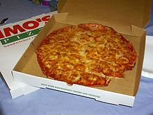
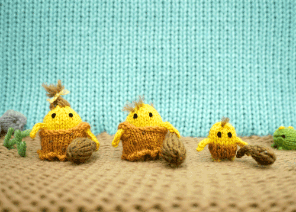
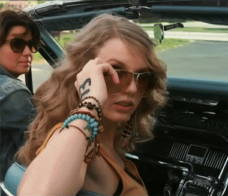

tv
i am absolutely in love with the shows 'new girl' and 'brooklyn 99'.
i feel like i identify with jessica day on a spiritual level. these shows
literally make me laugh so hard i can't even start to explain!
they definitely make my world a bit less boring
music
cavetown!! no one really knows about him, but his music has changed my life so much.
i love seeing shows live and i just really felt like i was so close to everyone in his crowds and it was truly magical.
his lyrics really make me feel something and i am a huge sucker for the lyrical aspect of songs.
foods
even though this is (aparently) controversial, the best pizza is definiitely from imo's! I grew up in st. louis,
so imo's is a staple here. a lot of people who aren't from st. louis say it is gross, but they are dead wrong.
st. louis also has the best pasta restaurant called 'pasta house' and i literally crave that all the time
it is so good. basically just ship me off to italy and i'd be fine.

hobbies
i love spending my time crocheting (i'm an old woman ik), playing my guitar, and painting. i also really love
to revamp old clothes to give them a new light! i actually just recently bleach dyed one of my columbia sweatshirts
and i have gotten so many compliments on it! it genuinely looks like something i could have bought at a store.

passions
despite being an interior design major, my biggest passion is definitely music. my interest in music
sprouted at the young age of five when i heard my first taylor swift song. i immediately wanted to be just
her and i started learning how to play guitar! i started singing and i never stopped :)
